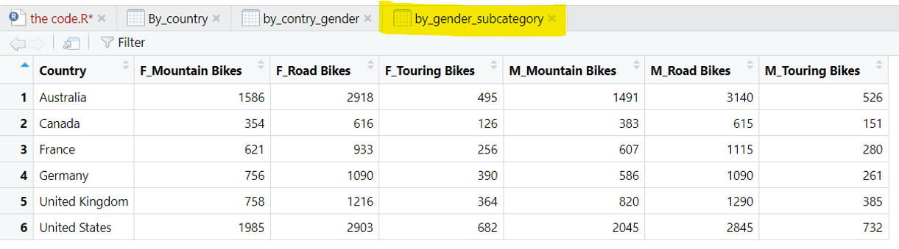

<!DOCTYPE html>
<html lang="en"><head>
<script src="quarto_english_finale_first_draft_files/libs/clipboard/clipboard.min.js"></script>
<script src="quarto_english_finale_first_draft_files/libs/quarto-html/tabby.min.js"></script>
<script src="quarto_english_finale_first_draft_files/libs/quarto-html/popper.min.js"></script>
<script src="quarto_english_finale_first_draft_files/libs/quarto-html/tippy.umd.min.js"></script>
<link href="quarto_english_finale_first_draft_files/libs/quarto-html/tippy.css" rel="stylesheet">
<link href="quarto_english_finale_first_draft_files/libs/quarto-html/light-border.css" rel="stylesheet">
<link href="quarto_english_finale_first_draft_files/libs/quarto-html/quarto-html.min.css" rel="stylesheet" data-mode="light">
<link href="quarto_english_finale_first_draft_files/libs/quarto-html/quarto-syntax-highlighting.css" rel="stylesheet" id="quarto-text-highlighting-styles"><meta charset="utf-8">
  <meta name="generator" content="quarto-1.4.555">

  <meta name="author" content="Valeria Bezlandy 321060626 - Bar Rudman 206849028">
  <title>Influence of gender on the purchase patterns of bicycles in different countries</title>
  <meta name="apple-mobile-web-app-capable" content="yes">
  <meta name="apple-mobile-web-app-status-bar-style" content="black-translucent">
  <meta name="viewport" content="width=device-width, initial-scale=1.0, maximum-scale=1.0, user-scalable=no, minimal-ui">
  <link rel="stylesheet" href="quarto_english_finale_first_draft_files/libs/revealjs/dist/reset.css">
  <link rel="stylesheet" href="quarto_english_finale_first_draft_files/libs/revealjs/dist/reveal.css">
  <style>
    code{white-space: pre-wrap;}
    span.smallcaps{font-variant: small-caps;}
    div.columns{display: flex; gap: min(4vw, 1.5em);}
    div.column{flex: auto; overflow-x: auto;}
    div.hanging-indent{margin-left: 1.5em; text-indent: -1.5em;}
    ul.task-list{list-style: none;}
    ul.task-list li input[type="checkbox"] {
      width: 0.8em;
      margin: 0 0.8em 0.2em -1em; /* quarto-specific, see https://github.com/quarto-dev/quarto-cli/issues/4556 */ 
      vertical-align: middle;
    }
    /* CSS for syntax highlighting */
    pre > code.sourceCode { white-space: pre; position: relative; }
    pre > code.sourceCode > span { line-height: 1.25; }
    pre > code.sourceCode > span:empty { height: 1.2em; }
    .sourceCode { overflow: visible; }
    code.sourceCode > span { color: inherit; text-decoration: inherit; }
    div.sourceCode { margin: 1em 0; }
    pre.sourceCode { margin: 0; }
    @media screen {
    div.sourceCode { overflow: auto; }
    }
    @media print {
    pre > code.sourceCode { white-space: pre-wrap; }
    pre > code.sourceCode > span { text-indent: -5em; padding-left: 5em; }
    }
    pre.numberSource code
      { counter-reset: source-line 0; }
    pre.numberSource code > span
      { position: relative; left: -4em; counter-increment: source-line; }
    pre.numberSource code > span > a:first-child::before
      { content: counter(source-line);
        position: relative; left: -1em; text-align: right; vertical-align: baseline;
        border: none; display: inline-block;
        -webkit-touch-callout: none; -webkit-user-select: none;
        -khtml-user-select: none; -moz-user-select: none;
        -ms-user-select: none; user-select: none;
        padding: 0 4px; width: 4em;
        color: #aaaaaa;
      }
    pre.numberSource { margin-left: 3em; border-left: 1px solid #aaaaaa;  padding-left: 4px; }
    div.sourceCode
      { color: #003b4f; background-color: #f1f3f5; }
    @media screen {
    pre > code.sourceCode > span > a:first-child::before { text-decoration: underline; }
    }
    code span { color: #003b4f; } /* Normal */
    code span.al { color: #ad0000; } /* Alert */
    code span.an { color: #5e5e5e; } /* Annotation */
    code span.at { color: #657422; } /* Attribute */
    code span.bn { color: #ad0000; } /* BaseN */
    code span.bu { } /* BuiltIn */
    code span.cf { color: #003b4f; } /* ControlFlow */
    code span.ch { color: #20794d; } /* Char */
    code span.cn { color: #8f5902; } /* Constant */
    code span.co { color: #5e5e5e; } /* Comment */
    code span.cv { color: #5e5e5e; font-style: italic; } /* CommentVar */
    code span.do { color: #5e5e5e; font-style: italic; } /* Documentation */
    code span.dt { color: #ad0000; } /* DataType */
    code span.dv { color: #ad0000; } /* DecVal */
    code span.er { color: #ad0000; } /* Error */
    code span.ex { } /* Extension */
    code span.fl { color: #ad0000; } /* Float */
    code span.fu { color: #4758ab; } /* Function */
    code span.im { color: #00769e; } /* Import */
    code span.in { color: #5e5e5e; } /* Information */
    code span.kw { color: #003b4f; } /* Keyword */
    code span.op { color: #5e5e5e; } /* Operator */
    code span.ot { color: #003b4f; } /* Other */
    code span.pp { color: #ad0000; } /* Preprocessor */
    code span.sc { color: #5e5e5e; } /* SpecialChar */
    code span.ss { color: #20794d; } /* SpecialString */
    code span.st { color: #20794d; } /* String */
    code span.va { color: #111111; } /* Variable */
    code span.vs { color: #20794d; } /* VerbatimString */
    code span.wa { color: #5e5e5e; font-style: italic; } /* Warning */
  </style>
  <link rel="stylesheet" href="quarto_english_finale_first_draft_files/libs/revealjs/dist/theme/quarto.css">
  <link rel="stylesheet" href="quarto_stl.css">
  <link href="quarto_english_finale_first_draft_files/libs/revealjs/plugin/quarto-line-highlight/line-highlight.css" rel="stylesheet">
  <link href="quarto_english_finale_first_draft_files/libs/revealjs/plugin/reveal-menu/menu.css" rel="stylesheet">
  <link href="quarto_english_finale_first_draft_files/libs/revealjs/plugin/reveal-menu/quarto-menu.css" rel="stylesheet">
  <link href="quarto_english_finale_first_draft_files/libs/revealjs/plugin/quarto-support/footer.css" rel="stylesheet">
  <style type="text/css">

  .callout {
    margin-top: 1em;
    margin-bottom: 1em;  
    border-radius: .25rem;
  }

  .callout.callout-style-simple { 
    padding: 0em 0.5em;
    border-left: solid #acacac .3rem;
    border-right: solid 1px silver;
    border-top: solid 1px silver;
    border-bottom: solid 1px silver;
    display: flex;
  }

  .callout.callout-style-default {
    border-left: solid #acacac .3rem;
    border-right: solid 1px silver;
    border-top: solid 1px silver;
    border-bottom: solid 1px silver;
  }

  .callout .callout-body-container {
    flex-grow: 1;
  }

  .callout.callout-style-simple .callout-body {
    font-size: 1rem;
    font-weight: 400;
  }

  .callout.callout-style-default .callout-body {
    font-size: 0.9rem;
    font-weight: 400;
  }

  .callout.callout-titled.callout-style-simple .callout-body {
    margin-top: 0.2em;
  }

  .callout:not(.callout-titled) .callout-body {
      display: flex;
  }

  .callout:not(.no-icon).callout-titled.callout-style-simple .callout-content {
    padding-left: 1.6em;
  }

  .callout.callout-titled .callout-header {
    padding-top: 0.2em;
    margin-bottom: -0.2em;
  }

  .callout.callout-titled .callout-title  p {
    margin-top: 0.5em;
    margin-bottom: 0.5em;
  }
    
  .callout.callout-titled.callout-style-simple .callout-content  p {
    margin-top: 0;
  }

  .callout.callout-titled.callout-style-default .callout-content  p {
    margin-top: 0.7em;
  }

  .callout.callout-style-simple div.callout-title {
    border-bottom: none;
    font-size: .9rem;
    font-weight: 600;
    opacity: 75%;
  }

  .callout.callout-style-default  div.callout-title {
    border-bottom: none;
    font-weight: 600;
    opacity: 85%;
    font-size: 0.9rem;
    padding-left: 0.5em;
    padding-right: 0.5em;
  }

  .callout.callout-style-default div.callout-content {
    padding-left: 0.5em;
    padding-right: 0.5em;
  }

  .callout.callout-style-simple .callout-icon::before {
    height: 1rem;
    width: 1rem;
    display: inline-block;
    content: "";
    background-repeat: no-repeat;
    background-size: 1rem 1rem;
  }

  .callout.callout-style-default .callout-icon::before {
    height: 0.9rem;
    width: 0.9rem;
    display: inline-block;
    content: "";
    background-repeat: no-repeat;
    background-size: 0.9rem 0.9rem;
  }

  .callout-title {
    display: flex
  }
    
  .callout-icon::before {
    margin-top: 1rem;
    padding-right: .5rem;
  }

  .callout.no-icon::before {
    display: none !important;
  }

  .callout.callout-titled .callout-body > .callout-content > :last-child {
    padding-bottom: 0.5rem;
    margin-bottom: 0;
  }

  .callout.callout-titled .callout-icon::before {
    margin-top: .5rem;
    padding-right: .5rem;
  }

  .callout:not(.callout-titled) .callout-icon::before {
    margin-top: 1rem;
    padding-right: .5rem;
  }

  /* Callout Types */

  div.callout-note {
    border-left-color: #4582ec !important;
  }

  div.callout-note .callout-icon::before {
    background-image: url('');
  }

  div.callout-note.callout-style-default .callout-title {
    background-color: #dae6fb
  }

  div.callout-important {
    border-left-color: #d9534f !important;
  }

  div.callout-important .callout-icon::before {
    background-image: url('');
  }

  div.callout-important.callout-style-default .callout-title {
    background-color: #f7dddc
  }

  div.callout-warning {
    border-left-color: #f0ad4e !important;
  }

  div.callout-warning .callout-icon::before {
    background-image: url('');
  }

  div.callout-warning.callout-style-default .callout-title {
    background-color: #fcefdc
  }

  div.callout-tip {
    border-left-color: #02b875 !important;
  }

  div.callout-tip .callout-icon::before {
    background-image: url('');
  }

  div.callout-tip.callout-style-default .callout-title {
    background-color: #ccf1e3
  }

  div.callout-caution {
    border-left-color: #fd7e14 !important;
  }

  div.callout-caution .callout-icon::before {
    background-image: url('');
  }

  div.callout-caution.callout-style-default .callout-title {
    background-color: #ffe5d0
  }

  </style>
  <style type="text/css">
    .reveal div.sourceCode {
      margin: 0;
      overflow: auto;
    }
    .reveal div.hanging-indent {
      margin-left: 1em;
      text-indent: -1em;
    }
    .reveal .slide:not(.center) {
      height: 100%;
      overflow-y: auto;
    }
    .reveal .slide.scrollable {
      overflow-y: auto;
    }
    .reveal .footnotes {
      height: 100%;
      overflow-y: auto;
    }
    .reveal .slide .absolute {
      position: absolute;
      display: block;
    }
    .reveal .footnotes ol {
      counter-reset: ol;
      list-style-type: none; 
      margin-left: 0;
    }
    .reveal .footnotes ol li:before {
      counter-increment: ol;
      content: counter(ol) ". "; 
    }
    .reveal .footnotes ol li > p:first-child {
      display: inline-block;
    }
    .reveal .slide ul,
    .reveal .slide ol {
      margin-bottom: 0.5em;
    }
    .reveal .slide ul li,
    .reveal .slide ol li {
      margin-top: 0.4em;
      margin-bottom: 0.2em;
    }
    .reveal .slide ul[role="tablist"] li {
      margin-bottom: 0;
    }
    .reveal .slide ul li > *:first-child,
    .reveal .slide ol li > *:first-child {
      margin-block-start: 0;
    }
    .reveal .slide ul li > *:last-child,
    .reveal .slide ol li > *:last-child {
      margin-block-end: 0;
    }
    .reveal .slide .columns:nth-child(3) {
      margin-block-start: 0.8em;
    }
    .reveal blockquote {
      box-shadow: none;
    }
    .reveal .tippy-content>* {
      margin-top: 0.2em;
      margin-bottom: 0.7em;
    }
    .reveal .tippy-content>*:last-child {
      margin-bottom: 0.2em;
    }
    .reveal .slide > img.stretch.quarto-figure-center,
    .reveal .slide > img.r-stretch.quarto-figure-center {
      display: block;
      margin-left: auto;
      margin-right: auto; 
    }
    .reveal .slide > img.stretch.quarto-figure-left,
    .reveal .slide > img.r-stretch.quarto-figure-left  {
      display: block;
      margin-left: 0;
      margin-right: auto; 
    }
    .reveal .slide > img.stretch.quarto-figure-right,
    .reveal .slide > img.r-stretch.quarto-figure-right  {
      display: block;
      margin-left: auto;
      margin-right: 0; 
    }
  </style>
</head>
<body class="quarto-light">
  <div class="reveal">
    <div class="slides">

<section id="title-slide" class="quarto-title-block center">
  <h1 class="title">Influence of gender on the purchase patterns of bicycles in different countries</h1>

<div class="quarto-title-authors">
<div class="quarto-title-author">
<div class="quarto-title-author-name">
Valeria Bezlandy 321060626 - Bar Rudman 206849028 
</div>
</div>
</div>

</section>
<section id="introduction" class="slide level2 smaller" style=".Headline">
<h2>Introduction</h2>
<p>In recent years, the bicycle has become a popular means of transportation used by many people around the world, especially in the big cities and countries with a developed cycling culture. Bicycles are used not only as a means of transportation, but also as a means of exercise, leisure and tourism. With the increase in awareness of health and preserving the quality of the environment, purchasing a bicycle has become one of the preferred choices for many. However, there are various factors that influence the purchase patterns of bicycles, and one of the main factors is gender.</p>
<p>The main research question of this work is: “Does gender affect the purchase patterns of bicycles in different countries?” This question is particularly interesting in light of the cultural, economic and social changes that have taken place in recent years around the world. Gender may play a significant role in consumer decisions, and the choices of men and women can have different effects on the market. In this work, we will examine how gender differences are reflected in the purchase of bicycles in the various countries, and we will try to understand what other factors may influence these decisions.</p>
</section>
<section id="introduction-1" class="slide level2 smaller">
<h2>introduction</h2>
<p>We will investigate the different patterns of bicycle purchase between men and women, while comparing the different countries. The purpose of the work is to identify and understand the different trends in the purchase of bicycles by gender, and to provide insights into how public policy, local culture and the weather affect purchasing decisions. In addition, we will examine whether there are significant differences between the different countries and how the purchase patterns change according to the geographical location and the cultural context.</p>
<p>In our research work we used data from Kaggle: The data is spread over 6 years 2011-2016 and shows bicycle purchase patterns in 6 countries: France, Germany, Great Britain, Australia, the United States and Canada. In addition, you can also find details about the consumers such as gender, age and when they purchased the bike (month, day).</p>
</section>
<section id="literature-review-1" class="slide level2 smaller">
<h2>Literature review 1</h2>
<p>The article “Beyond the bicycle: Seeing the context of the gender gap in cycling” written by Caroline Shaw a, Marie Russell a, Michael Keall a, Sara MacBride-Stewart b, Kirsty Wild c, Dory Reeves d, Rebecca Bentley e, Alistair Woodward looks at the gender gap in cycling in New Zealand, and aims to understand the factors that influence the differences between men and women in this area.Although the country ranks high in indicators of gender equality, the article suggests that women are less likely to cycle than men. The researchers used data from the National Household Travel Survey (NZHTS) to analyze the cycling behaviors of men and women. They found that women with children at home were less likely to cycle. In addition, a negative (inverse) relationship was found between the number of vehicles at home and cycling - the more vehicles there are, the less chance of cycling. The article highlights the influence of social and cultural factors on cycling, such as gender roles, access to resources and free time. The researchers suggest that there is a need for a transportation policy that takes into account the needs of women, in order to encourage cycling and reduce the gender gaps that have been created. In conclusion, the article suggests that there is a need to develop a transportation policy that takes into account the needs and preferences of women, in order to reduce the gender gap and improve the use of bicycles as a means of transportation.</p>
</section>
<section id="literature-review-2" class="slide level2 smaller">
<h2>Literature review 2</h2>
<p>The article “Gender differences in cycling patterns and attitudes towards cycling in a sample of European regular cyclists” written by Gabriele Pratia, Federico Frabonib, Marco De Angelisb, Luca Pietrantonib, Daniel Johnsonc, Jeremy Shiresc deals with gender differences in attitudes and use of bicycles among cyclists in European countries variance.The main goal of the study was to understand how gender affects the use of bicycles, focusing on different cultural and social contexts. Based on the article, it can be seen that gender does affect cycling patterns, but the effect varies according to different contexts. Women tend to use bicycles more for activities that are not considered work trips, such as shopping and childcare, while men tend to ride more for leisure and sports purposes. This indicates that gender affects the purposes of bicycle use, where women may be more focused on daily activities and not necessarily on competitive or sporty riding.Women reported a higher sense of discomfort than men when it comes to roads without bike lanes, which indicates the need to improve the infrastructure to encourage cycling among women. Men tend to suffer more serious injuries while riding, which indicates differences in risk behavior and riding skills between the sexes. This may indicate that men tend to take higher risks when riding, which may affect their riding patterns. <br> In conclusion, according to the article, men tend to use bicycles more than women, especially for commuting and leisure activities while women tend to use bicycles more for everyday activities such as shopping.</p>
</section>
<section id="hypotheses" class="slide level2 smaller">
<h2>Hypotheses</h2>
<p><strong>Secondary research questions:</strong></p>
<ul>
<li><p>How does the influence of gender on the purchase patterns of bicycles vary between different countries?</p></li>
<li><p>Is there a difference in the preference of the types of bicycles (mountain bikes, road bikes, touring bikes) between men and women?</p></li>
</ul>
<p><strong>Assumptions:</strong> We hypothesize that there is a significant difference in the purchase patterns of the types of bicycles between men and women in different countries, women tend to purchase more touring/road bikes and men tend to purchase more mountain bikes in different countries (based on the literature).</p>
<p>We expect to see that the purchase patterns of bicycles according to gender change significantly over the years in different countries and this is due to changes in the economic situation that make it possible to purchase a car or vice versa due to the cost of living priority will be given to the purchase of bicycles. Additionally as we progress over the years we can see that the awareness of managing a healthy lifestyle increases which may promote Buying a bike.</p>
</section>
<section id="methodology-research-methods" class="slide level2 smaller">
<h2>Methodology/ research methods</h2>
<p>
The data was taken from Kaggle which we downloaded and saved in a working folder.We uploaded the data to Studio R and named it bicycle_sales. We have downloaded all the packages that we will work with during the work.
</p>
<div class="cell">
<div class="sourceCode cell-code" id="cb1"><pre class="sourceCode numberSource r number-lines code-with-copy"><code class="sourceCode r"><span id="cb1-1"><a href=""></a>bicycle_sales<span class="ot">=</span> <span class="fu">read.csv</span>(<span class="st">"bike_sales.csv"</span>)</span>
<span id="cb1-2"><a href=""></a></span>
<span id="cb1-3"><a href=""></a>bicycle_sales</span>
<span id="cb1-4"><a href=""></a></span>
<span id="cb1-5"><a href=""></a><span class="fu">library</span>(dplyr)</span>
<span id="cb1-6"><a href=""></a><span class="fu">library</span>(tidyr)</span>
<span id="cb1-7"><a href=""></a><span class="fu">library</span>(ggplot2)</span></code><button title="Copy to Clipboard" class="code-copy-button"><i class="bi"></i></button></pre></div>
</div>
</section>
<section id="methodology-research-methods-1" class="slide level2 smaller">
<h2>Methodology/ research methods</h2>
<p>We started to process the data, in the data appeared not only bicycle purchases but also details of clothing and protection such as a helmet that were purchased in the same stores that sold the bicycles, because they were not relevant to our work we used the filter command which filtered the rows we wanted only rows where the purchase was a bicycle were selected.</p>
<p>Later we chose to use the select command in order to choose the columns relevant to our research (there were columns such as the profit of the store that did not contribute to us) in order to reduce and make the table more orderly and finally for the convenience of being able to follow the years we chose to separate the date into day-month-year and this with separate command.</p>
<div class="cell">
<div class="sourceCode cell-code" id="cb2"><pre class="sourceCode numberSource r number-lines code-with-copy"><code class="sourceCode r"><span id="cb2-1"><a href=""></a>Bikes<span class="ot">=</span> bicycle_sales <span class="sc">|&gt;</span></span>
<span id="cb2-2"><a href=""></a><span class="fu">filter</span>(Product_Category<span class="sc">==</span> <span class="st">"Bikes"</span>)</span>
<span id="cb2-3"><a href=""></a></span>
<span id="cb2-4"><a href=""></a>Bikes<span class="ot">=</span> Bikes <span class="sc">|&gt;</span></span>
<span id="cb2-5"><a href=""></a><span class="fu">select</span>(Date, Customer_Age, Customer_Gender, Order_Quantity, Country, State, Sub_Category</span>
<span id="cb2-6"><a href=""></a>, Product_Category)</span>
<span id="cb2-7"><a href=""></a></span>
<span id="cb2-8"><a href=""></a>Bikes<span class="ot">=</span> Bikes <span class="sc">|&gt;</span></span>
<span id="cb2-9"><a href=""></a><span class="fu">separate</span>(Date, <span class="at">into =</span> <span class="fu">c</span>(<span class="st">"Day"</span>, <span class="st">"Month"</span>, <span class="st">"Year"</span>), <span class="at">sep =</span> <span class="st">"/"</span>)</span></code><button title="Copy to Clipboard" class="code-copy-button"><i class="bi"></i></button></pre></div>
</div>
</section>
<section id="section" class="slide level2 smaller" style="color: blue">
<h2></h2>
<p>After separating the date we used select again to select the relevant columns, we selected only the year and gave up the day and the month.</p>
<div class="cell">
<div class="sourceCode cell-code" id="cb3"><pre class="sourceCode numberSource r number-lines code-with-copy"><code class="sourceCode r"><span id="cb3-1"><a href=""></a>Bikes<span class="ot">=</span> Bikes <span class="sc">|&gt;</span></span>
<span id="cb3-2"><a href=""></a>  <span class="fu">select</span>(Year, Customer_Age, Customer_Gender, Order_Quantity, Country, Sub_Category)</span></code><button title="Copy to Clipboard" class="code-copy-button"><i class="bi"></i></button></pre></div>
</div>
<p>In the first attempt, we created new tables from our data that would be suitable for us to continue, we used group by, summarize and made the table wider by the pivot wider command for visual comfort.</p>
<div class="cell">
<div class="sourceCode cell-code" id="cb4"><pre class="sourceCode numberSource r number-lines code-with-copy"><code class="sourceCode r"><span id="cb4-1"><a href=""></a><span class="co"># Table of years and countries according to purchase</span></span>
<span id="cb4-2"><a href=""></a>By_country <span class="ot">=</span> Bikes <span class="sc">|&gt;</span> <span class="fu">group_by</span>(Country, Year) <span class="sc">|&gt;</span></span>
<span id="cb4-3"><a href=""></a>  <span class="fu">summarise</span>(<span class="at">Sum_Quantity =</span> <span class="fu">sum</span>(Order_Quantity)) <span class="sc">|&gt;</span> </span>
<span id="cb4-4"><a href=""></a>  <span class="fu">pivot_wider</span>(<span class="at">names_from =</span> Year, <span class="at">values_from =</span> Sum_Quantity)</span>
<span id="cb4-5"><a href=""></a><span class="co"># Table of years and gender by purchase</span></span>
<span id="cb4-6"><a href=""></a>by_contry_gender <span class="ot">=</span> Bikes <span class="sc">|&gt;</span> <span class="fu">group_by</span>(Country, Year, Customer_Gender) <span class="sc">|&gt;</span></span>
<span id="cb4-7"><a href=""></a>  <span class="fu">summarise</span>(<span class="at">Sum_Quantity =</span> <span class="fu">sum</span>(Order_Quantity)) <span class="sc">|&gt;</span> </span>
<span id="cb4-8"><a href=""></a>  <span class="fu">pivot_wider</span>(<span class="at">names_from =</span> <span class="fu">c</span>(Year, Customer_Gender), <span class="at">values_from =</span> Sum_Quantity)</span>
<span id="cb4-9"><a href=""></a><span class="co">#We check how many of each type of bike were bought in each country by gender</span></span>
<span id="cb4-10"><a href=""></a>by_gender_subcategory <span class="ot">=</span> Bikes <span class="sc">|&gt;</span> <span class="fu">group_by</span>(Country,Customer_Gender, Sub_Category) <span class="sc">|&gt;</span></span>
<span id="cb4-11"><a href=""></a>  <span class="fu">summarise</span>(<span class="at">Sum_Quantity =</span> <span class="fu">sum</span>(Order_Quantity)) <span class="sc">|&gt;</span></span>
<span id="cb4-12"><a href=""></a>  <span class="fu">pivot_wider</span>(<span class="at">names_from =</span> <span class="fu">c</span>(Customer_Gender, Sub_Category), <span class="at">values_from =</span> Sum_Quantity, <span class="at">names_sep =</span> <span class="st">"_"</span>)</span></code><button title="Copy to Clipboard" class="code-copy-button"><i class="bi"></i></button></pre></div>
</div>
</section>
<section id="section-1" class="slide level2 smaller">
<h2></h2>
<div class="quarto-figure quarto-figure-center">
<figure>
<p></p>
<figcaption><strong>Table 1:</strong> Purchaes per country - through the years</figcaption>
</figure>
</div>
<div class="quarto-figure quarto-figure-center">
<figure>
<p></p>
<figcaption><strong>Table 2:</strong> purchase per gender and type of bike</figcaption>
</figure>
</div>
<div class="quarto-figure quarto-figure-center">
<figure>
<p></p>
<figcaption>Table 3: Purchases per gender by country and year</figcaption>
</figure>
</div>
</section>
<section id="section-2" class="slide level2">
<h2></h2>
<p>After trial and error, we realized that in order to be able to work with the tables and create visual graphs from them we would have to make them longer by rearranging them with the Pivot longer action: We changed the names of the tables by adding the number 2 so that we can know that any table that has a 2 is the final table with which we will work and create graphs.</p>
<div class="cell">
<div class="sourceCode cell-code" id="cb5"><pre class="sourceCode numberSource r number-lines code-with-copy"><code class="sourceCode r"><span id="cb5-1"><a href=""></a>By_country2<span class="ot">=</span> By_country <span class="sc">|&gt;</span></span>
<span id="cb5-2"><a href=""></a>  <span class="fu">pivot_longer</span>(<span class="at">cols =</span> <span class="sc">-</span>Country, <span class="at">names_to =</span> <span class="st">"Year"</span>, <span class="at">values_to =</span> <span class="st">"Purchases"</span>) </span>
<span id="cb5-3"><a href=""></a></span>
<span id="cb5-4"><a href=""></a><span class="co">#יצירת הגרף</span></span>
<span id="cb5-5"><a href=""></a></span>
<span id="cb5-6"><a href=""></a><span class="fu">ggplot</span>(By_country2, <span class="fu">aes</span>(<span class="at">x =</span> Year, <span class="at">y =</span> Purchases, <span class="at">color =</span> Country, <span class="at">group =</span> Country)) <span class="sc">+</span></span>
<span id="cb5-7"><a href=""></a>  <span class="fu">geom_line</span>(<span class="at">size =</span> <span class="dv">1</span>) <span class="sc">+</span></span>
<span id="cb5-8"><a href=""></a>  <span class="fu">geom_point</span>(<span class="at">size =</span> <span class="dv">2</span>) <span class="sc">+</span></span>
<span id="cb5-9"><a href=""></a>  <span class="fu">labs</span>(<span class="at">title =</span> <span class="st">"Bike Purchases by Country (2011-2016)"</span>,</span>
<span id="cb5-10"><a href=""></a>       <span class="at">x =</span> <span class="st">"Year"</span>,</span>
<span id="cb5-11"><a href=""></a>       <span class="at">y =</span> <span class="st">"Number of Purchases"</span>) <span class="sc">+</span></span>
<span id="cb5-12"><a href=""></a>  <span class="fu">theme_minimal</span>()</span></code><button title="Copy to Clipboard" class="code-copy-button"><i class="bi"></i></button></pre></div>
</div>
</section>
<section id="table_4" class="slide level2">
<h2>Table_4</h2>

</section>
<section id="bike-purchases-by-country-2011-2016" class="slide level2">
<h2>Bike Purchases by Country 2011-2016</h2>

</section>
<section id="rearranging-the-table-by-country-and-gender" class="slide level2">
<h2>Rearranging the table by country and gender</h2>
<div class="cell">
<div class="sourceCode cell-code" id="cb6"><pre class="sourceCode numberSource r number-lines code-with-copy"><code class="sourceCode r"><span id="cb6-1"><a href=""></a>by_country_gender2 <span class="ot">=</span> by_contry_gender <span class="sc">|&gt;</span></span>
<span id="cb6-2"><a href=""></a>  <span class="fu">pivot_longer</span>(<span class="at">cols =</span> <span class="sc">-</span>Country, <span class="at">names_to =</span> <span class="st">"Year_Gender"</span>, <span class="at">values_to =</span> <span class="st">"Purchases"</span>) <span class="sc">|&gt;</span></span>
<span id="cb6-3"><a href=""></a>  <span class="fu">separate</span>(Year_Gender, <span class="at">into =</span> <span class="fu">c</span>(<span class="st">"Year"</span>, <span class="st">"Gender"</span>), <span class="at">sep =</span> <span class="st">"_"</span>) </span>
<span id="cb6-4"><a href=""></a></span>
<span id="cb6-5"><a href=""></a><span class="co">#plot</span></span>
<span id="cb6-6"><a href=""></a></span>
<span id="cb6-7"><a href=""></a><span class="fu">ggplot</span>(by_country_gender2, <span class="fu">aes</span>(<span class="at">x =</span> Year, <span class="at">y =</span> Purchases, <span class="at">color =</span> Gender, <span class="at">group =</span> <span class="fu">interaction</span>(Country, Gender))) <span class="sc">+</span></span>
<span id="cb6-8"><a href=""></a>  <span class="fu">geom_line</span>(<span class="at">size =</span> <span class="dv">1</span>) <span class="sc">+</span></span>
<span id="cb6-9"><a href=""></a>  <span class="fu">geom_point</span>(<span class="at">size =</span> <span class="dv">2</span>) <span class="sc">+</span></span>
<span id="cb6-10"><a href=""></a>  <span class="fu">facet_wrap</span>(<span class="sc">~</span> Country) <span class="sc">+</span></span>
<span id="cb6-11"><a href=""></a>  <span class="fu">labs</span>(<span class="at">title =</span> <span class="st">"Bike Purchases by Country, Gender, and Year (2011-2016)"</span>,</span>
<span id="cb6-12"><a href=""></a>       <span class="at">x =</span> <span class="st">"Year"</span>,</span>
<span id="cb6-13"><a href=""></a>       <span class="at">y =</span> <span class="st">"Number of Purchases"</span>) <span class="sc">+</span></span>
<span id="cb6-14"><a href=""></a>  <span class="fu">theme_minimal</span>()</span></code><button title="Copy to Clipboard" class="code-copy-button"><i class="bi"></i></button></pre></div>
</div>
</section>
<section id="table-5" class="slide level2">
<h2>Table 5</h2>

</section>
<section id="plot-2" class="slide level2">
<h2>Plot 2</h2>

<p class="caption">We cannot currently see a distinct difference between the sexes without calculations</p></section>
<section id="rearranging-the-table-by-gender-country-and-bike-type" class="slide level2 smaller">
<h2>Rearranging the table by gender, country and bike type</h2>
<div class="cell">
<div class="sourceCode cell-code" id="cb7"><pre class="sourceCode numberSource r number-lines code-with-copy"><code class="sourceCode r"><span id="cb7-1"><a href=""></a>by_gender_subcategory2<span class="ot">=</span> by_gender_subcategory <span class="sc">|&gt;</span></span>
<span id="cb7-2"><a href=""></a>  <span class="fu">pivot_longer</span>(<span class="at">cols =</span> <span class="sc">-</span>Country, <span class="at">names_to =</span> <span class="st">"BikeType_Gender"</span>, <span class="at">values_to =</span> <span class="st">"Purchases"</span>) <span class="sc">|&gt;</span></span>
<span id="cb7-3"><a href=""></a> </span>
<span id="cb7-4"><a href=""></a>   <span class="fu">separate</span>(BikeType_Gender, <span class="at">into =</span> <span class="fu">c</span>(<span class="st">"Gender"</span>, <span class="st">"BikeType"</span>), <span class="at">sep =</span> <span class="st">"_"</span>, <span class="at">extra =</span> <span class="st">"merge"</span>)</span>
<span id="cb7-5"><a href=""></a></span>
<span id="cb7-6"><a href=""></a><span class="do">##Plot</span></span>
<span id="cb7-7"><a href=""></a></span>
<span id="cb7-8"><a href=""></a><span class="fu">ggplot</span>(by_gender_subcategory2, <span class="fu">aes</span>(<span class="at">x =</span> BikeType, <span class="at">y =</span> Purchases, <span class="at">fill =</span> Gender)) <span class="sc">+</span></span>
<span id="cb7-9"><a href=""></a>  <span class="fu">geom_bar</span>(<span class="at">stat =</span> <span class="st">"identity"</span>, <span class="at">position =</span> <span class="st">"dodge"</span>) <span class="sc">+</span></span>
<span id="cb7-10"><a href=""></a>  <span class="fu">facet_wrap</span>(<span class="sc">~</span> Country) <span class="sc">+</span></span>
<span id="cb7-11"><a href=""></a>  <span class="fu">labs</span>(<span class="at">title =</span> <span class="st">"Bike Purchases by Country, Gender, and Bike Type"</span>,</span>
<span id="cb7-12"><a href=""></a>       <span class="at">x =</span> <span class="st">"Bike Type"</span>,</span>
<span id="cb7-13"><a href=""></a>       <span class="at">y =</span> <span class="st">"Number of Purchases"</span>) <span class="sc">+</span></span>
<span id="cb7-14"><a href=""></a>  <span class="fu">theme_minimal</span>()</span></code><button title="Copy to Clipboard" class="code-copy-button"><i class="bi"></i></button></pre></div>
</div>
</section>
<section id="table_6" class="slide level2">
<h2>Table_6</h2>

</section>
<section id="plot-3" class="slide level2">
<h2>Plot 3</h2>

</section>
<section id="section-3" class="slide level2">
<h2></h2>
<p>After checking, we saw that all the variables were of integer type in order to be able to continue doing calculations and statistical tests, we had to change some parameters to factor because they are categorical male-female, years, type of bicycle, etc..</p>
<div class="cell">
<div class="sourceCode cell-code" id="cb8"><pre class="sourceCode numberSource r number-lines code-with-copy"><code class="sourceCode r"><span id="cb8-1"><a href=""></a><span class="co">#In order to be able to do statistical calculations conveniently, we will need to turn certain variables into a factor: #</span></span>
<span id="cb8-2"><a href=""></a>By_country2<span class="sc">$</span>Country<span class="ot">=</span> <span class="fu">as.factor</span>(By_country2<span class="sc">$</span>Country)</span>
<span id="cb8-3"><a href=""></a>by_country_gender2<span class="sc">$</span>Country<span class="ot">=</span> <span class="fu">as.factor</span>(by_country_gender2<span class="sc">$</span>Country)</span>
<span id="cb8-4"><a href=""></a>by_country_gender2<span class="sc">$</span>Gender<span class="ot">=</span> <span class="fu">as.factor</span>(by_country_gender2<span class="sc">$</span>Gender)</span>
<span id="cb8-5"><a href=""></a>by_gender_subcategory2<span class="sc">$</span>Country<span class="ot">=</span> <span class="fu">as.factor</span>(by_gender_subcategory2<span class="sc">$</span>Country)</span>
<span id="cb8-6"><a href=""></a>by_gender_subcategory2<span class="sc">$</span>BikeType<span class="ot">=</span> <span class="fu">as.factor</span>(by_gender_subcategory2<span class="sc">$</span>BikeType)</span>
<span id="cb8-7"><a href=""></a>by_gender_subcategory2<span class="sc">$</span>Gender<span class="ot">=</span> <span class="fu">as.factor</span>(by_gender_subcategory2<span class="sc">$</span>Gender)</span></code><button title="Copy to Clipboard" class="code-copy-button"><i class="bi"></i></button></pre></div>
</div>
</section>
<section id="independent-t-test" class="slide level2">
<h2>Independent T-test</h2>
<p>By the T test we will check whether there is a significant statistical difference between the average purchases between the two different groups, men and women.</p>
<p>First of all we did a preliminary test for the <strong>T test</strong> and it is an <strong>F test</strong> designed to check if there is a significant difference between the differences of the two groups.</p>
<div class="cell">
<div class="sourceCode cell-code" id="cb9"><pre class="sourceCode numberSource r number-lines code-with-copy"><code class="sourceCode r"><span id="cb9-1"><a href=""></a>f_test_result <span class="ot">=</span> <span class="fu">var.test</span>(Purchases <span class="sc">~</span> Gender, <span class="at">data =</span> by_country_gender2)</span>
<span id="cb9-2"><a href=""></a><span class="fu">print</span>(f_test_result)</span></code><button title="Copy to Clipboard" class="code-copy-button"><i class="bi"></i></button></pre></div>
</div>
</section>
<section id="independent-t-test-1" class="slide level2">
<h2>Independent T-test</h2>

<p class="caption"><strong>It can be seen that in the F test, the p value is much greater than 0.05, it came out to be 0.9393, which means that the differences of the two groups are similar and there is no significant difference between them, so we can proceed to the T test.</strong></p></section>
<section id="independent-t-test-2" class="slide level2 smaller">
<h2>Independent T-test</h2>
<div class="cell">
<div class="sourceCode cell-code" id="cb10"><pre class="sourceCode numberSource r number-lines code-with-copy"><code class="sourceCode r"><span id="cb10-1"><a href=""></a>t_test_result<span class="ot">=</span> <span class="fu">t.test</span>(Purchases <span class="sc">~</span> Gender, <span class="at">data =</span>  by_country_gender2)</span>
<span id="cb10-2"><a href=""></a><span class="fu">print</span>(t_test_result)</span></code><button title="Copy to Clipboard" class="code-copy-button"><i class="bi"></i></button></pre></div>
</div>

<p><strong>The test result:</strong></p>
<p>it can be seen that the P VALUE=0.909 is greater than 0.05, which indicates that there is no significant difference in the average bicycle purchases between men and women in our sample.</p>
</section>
<section id="two-way-anova-test" class="slide level2 smaller">
<h2>Two-way ANOVA test</h2>
<p>We chose to check whether there is an interaction between gender and the type of bicycle that affects the number of bicycle purchases. That is, does the effect of the type of bicycle vary according to gender.</p>
<div class="cell">
<div class="sourceCode cell-code" id="cb11"><pre class="sourceCode numberSource r number-lines code-with-copy"><code class="sourceCode r"><span id="cb11-1"><a href=""></a>anova_result <span class="ot">=</span> <span class="fu">aov</span>(Purchases <span class="sc">~</span> Gender <span class="sc">*</span> BikeType, <span class="at">data =</span> by_gender_subcategory2)</span>
<span id="cb11-2"><a href=""></a><span class="fu">summary</span>(anova_result)</span></code><button title="Copy to Clipboard" class="code-copy-button"><i class="bi"></i></button></pre></div>
</div>

<p><strong>The test result:</strong> There is no significant difference in the number of purchases between men and women.</p>
<p><u><strong>There is a clear difference in the number of purchases between the different types of bikes.</strong></u></p>
<p>There is no significant interaction between gender and the type of bicycle, that is, the differences in the number of purchases between the types of bicycle are not significantly different between men and women.</p>
</section>
<section id="chi-square-test" class="slide level2 smaller">
<h2>Chi square test</h2>
<p>The test is designed to test whether there is a dependency between two categorical variables, in our case we chose gender (male/female) and the type of bicycle (off-road/trip/road).First of all, we created a frequency table from the original data, which we then called Bikes so that all the observations could be entered.We called the table Table_gender_biketype and then from it we created a fixed data frame that we called DF_G_T and this is the frequency table that was created for us on which we did the chi square test.</p>
<div class="cell">
<div class="sourceCode cell-code" id="cb12"><pre class="sourceCode numberSource r number-lines code-with-copy"><code class="sourceCode r"><span id="cb12-1"><a href=""></a>table_gender_biketype <span class="ot">=</span> <span class="fu">table</span>(Bikes<span class="sc">$</span>Customer_Gender, Bikes<span class="sc">$</span>Sub_Category)</span>
<span id="cb12-2"><a href=""></a></span>
<span id="cb12-3"><a href=""></a><span class="fu">print</span>(table_gender_biketype)</span>
<span id="cb12-4"><a href=""></a></span>
<span id="cb12-5"><a href=""></a>DF_G_T<span class="ot">=</span> <span class="fu">as.data.frame</span>(table_gender_biketype)</span>
<span id="cb12-6"><a href=""></a></span>
<span id="cb12-7"><a href=""></a>chi_test<span class="ot">=</span> <span class="fu">chisq.test</span>(table_gender_biketype)</span>
<span id="cb12-8"><a href=""></a><span class="fu">print</span>(chi_test)</span></code><button title="Copy to Clipboard" class="code-copy-button"><i class="bi"></i></button></pre></div>
</div>
</section>
<section id="chi-square-test-1" class="slide level2 smaller">
<h2>Chi square test</h2>
<div class="quarto-figure quarto-figure-center">
<figure>
<p></p>
<figcaption>Table of Frequency</figcaption>
</figure>
</div>
<p><u><strong>CHI squared test results:</strong></u></p>
<div class="quarto-figure quarto-figure-center">
<figure>
<p></p>
<figcaption>The P Value=0.0242, smaller than 0.05, so the test results show that there is a statistically significant relationship between gender and the type of bicycle. That is, the type of bicycle chosen depends on the gender of the buyer.</figcaption>
</figure>
</div>
</section>
<section id="visual-display-of-frequencies" class="slide level2">
<h2>Visual display of frequencies</h2>
<div class="cell">
<div class="sourceCode cell-code" id="cb13"><pre class="sourceCode numberSource r number-lines code-with-copy"><code class="sourceCode r"><span id="cb13-1"><a href=""></a><span class="fu">ggplot</span>(DF_G_T, <span class="fu">aes</span>(<span class="at">x =</span> Var2, <span class="at">y =</span> Freq, <span class="at">fill =</span> Var1)) <span class="sc">+</span></span>
<span id="cb13-2"><a href=""></a>  <span class="fu">geom_bar</span>(<span class="at">stat =</span> <span class="st">"identity"</span>, <span class="at">position =</span> <span class="st">"dodge"</span>) <span class="sc">+</span></span>
<span id="cb13-3"><a href=""></a>  <span class="fu">labs</span>(<span class="at">title =</span> <span class="st">"Incidence Of Bike Types By Gender"</span>,</span>
<span id="cb13-4"><a href=""></a>       <span class="at">x =</span> <span class="st">"Bike Type"</span>,</span>
<span id="cb13-5"><a href=""></a>       <span class="at">y =</span> <span class="st">"Incidence Of Bike Types"</span>) <span class="sc">+</span></span>
<span id="cb13-6"><a href=""></a>  <span class="fu">theme_minimal</span>()</span></code><button title="Copy to Clipboard" class="code-copy-button"><i class="bi"></i></button></pre></div>
</div>

</section>
<section id="results" class="slide level2 smaller">
<h2>Results</h2>
<p>With the help of the F and T test, we checked whether there is a significant difference in bicycle purchases between men and women (T test) and whether there is a significant difference between the groups (F test). Both tests did not show a significant difference, which led us to the conclusion that there is no difference in purchases between the genders according to the data we worked on.</p>
<p>Using the ANOVA test, we tested the relationship between gender and type of bicycle, but the results indicated that gender does not significantly affect the type of bicycle purchased, while the type of bicycle itself has a significant effect on the number of purchases.</p>
<p>Using a chi-square test we tested whether there is a relationship between gender and the type of bicycle, the results showed that there is a significant relationship, which suggests that gender influences the type of bicycle chosen for purchase.</p>
</section>
<section id="conclusions-from-the-study-with-a-link-to-the-literature" class="slide level2 smaller">
<h2>Conclusions from the study with a link to the literature:</h2>
<p>The article “Beyond the bicycle: Seeing the context of the gender gap in cycling” talks about social and cultural influences such as gender roles and access to resources that affect the use of bicycles, the results of the tests we performed reflect some of these effects. The result of the T-test showed that there is no significant difference in the number of purchases between men and women, but there are significant differences in the types of bicycles purchased by gender (resulted in the anova test and squared), which indicates the influence of social factors in the decision-making process, and the different preferences regarding the types of bicycles they purchase.</p>
</section>
<section id="conclusions-from-the-study-with-a-link-to-the-literature-1" class="slide level2 smaller">
<h2>Conclusions from the study with a link to the literature:</h2>
<p>The article “Gender differences in cycling patterns and attitudes towards cycling in a sample of European regular cyclists” indicates that women use bicycles more for daily activities such as shopping and childcare, while men use them more for leisure and sports. According to the results of our research, we saw a significant difference in the types of bicycles purchased between the genders. The results of the ANOVA and chi-square tests we conducted support this claim. Although gender does not significantly affect the total amount of purchases, it does affect the type of bike purchased, which may reflect the different purposes that users attribute to riding.In addition, the article talks about the fact that women report a higher feeling of discomfort on roads without bike lanes. The results of our study reinforce this conclusion in that the differences between the types of bikes purchased can be related to the riders’ sense of security and comfort, which can influence women’s choice of bikes that are more suitable for safe and comfortable riding.</p>
<p>In conclusion, the reviewed articles support the idea that there are gender differences in perceptions and patterns of bicycle use, especially in the context of social and cultural roles. In your study, gender does not seem to have a significant effect on the overall number of purchases, but there is a significant effect on the type of bike purchased.</p>
</section>
<section id="conclusions" class="slide level2 smaller">
<h2>Conclusions:</h2>
<h3 class="smaller" id="lets-return-to-our-main-research-question-does-gender-affect-the-purchase-patterns-of-bicycles-in-different-countries">Let’s return to our main research question: <u><strong>Does gender affect the purchase patterns of bicycles in different countries?</strong></u></h3>
<p>The general conclusion is that gender does affect the type of bike purchased, but not necessarily the number of purchases.We were not able to confirm our hypothesis, we thought that gender would play a role and affect the purchase patterns of bicycles and we even expected to see that more men would purchase bicycles than women. There is room to deepen the research in order to better understand the purchase patterns.The reason for this could be that the sample was not large and diverse enough, our study focused on 6 individual countries and perhaps in order to achieve greater accuracy, more countries and a wider range of years should be included.</p>
<h3 class="smaller" id="policy-and-implementation">Policy and Implementation:</h3>
<p>Consider campaigns adapted to different genders to encourage the purchase of certain types of bicycles.</p>
<p>Focus on improving bicycle infrastructure that will encourage the use of cycling among women, especially in light of the findings from the literature on the feeling of discomfort among women.</p>
</section>
<section id="bonus" class="slide level2 smaller">
<h2>Bonus</h2>

</section>
<section id="section-4" class="slide level2 smaller">
<h2></h2>
<p>We were surprised to see the spread of data between the years 2011-2016 in the different countries.The country where the largest number of bicycle purchases was the USA - the largest and most populated country. And then we expected to see Canada, but it is at the bottom and the second place goes to Australia.</p>
<p>Until 2015, an upward trend in the purchase of bicycles can be seen in most countries, apparently following policy changes and encouraging cycling Mainly due to the environmental and health aspect, but from 2015 to 2016 there is a decrease in most countries except France, after examination we speculate that the reason for this was the electric bicycle market that entered strongly in these years and it may be that the off-road/touring/road bikes were replaced by electric bikes.</p>
<p>In addition, there could be other economic reasons, Social issues that are worth checking in a follow-up study that explains the decrease in the number of purchases and whether there are other countries where the increase has remained and what is the reason for this.</p>
</section>
<section id="bibliography" class="slide level2 smaller">
<h2>Bibliography</h2>
<p>“Beyond the bicycle: Seeing the context of the gender gap in cycling” Caroline Shaw a, Marie Russell a, Michael Keall a, Sara MacBride-Stewart b, Kirsty Wild c Dory Reeves d, Rebecca Bentley e, Alistair Woodward Journal of transport &amp; health (2020) <a href="https://www.sciencedirect.com/science/article/abs/pii/S221414052030075X" class="uri">https://www.sciencedirect.com/science/article/abs/pii/S221414052030075X</a></p>
<p>“Gender differences in cycling patterns and attitudes towards cycling in a sample of European regular cyclists” Gabriele Pratia, Federico Frabonib, Marco De Angelisb, Luca Pietrantonib, Daniel Johnsonc, Jeremy Shiresc Journal of Transport Geography Volume 78, June 2019, Pages 1-7 <a href="https://www.sciencedirect.com/science/article/abs/pii/S0966692318305556" class="uri">https://www.sciencedirect.com/science/article/abs/pii/S0966692318305556</a></p>
<p>Data from Kaggle: <a href="https://www.kaggle.com/datasets/sadiqshah/bike-sales-in-europe/data" class="uri">https://www.kaggle.com/datasets/sadiqshah/bike-sales-in-europe/data</a></p>
<div class="quarto-auto-generated-content">
<div class="footer footer-default">

</div>
</div>
</section>
    </div>
  </div>

  <script>window.backupDefine = window.define; window.define = undefined;</script>
  <script src="quarto_english_finale_first_draft_files/libs/revealjs/dist/reveal.js"></script>
  <!-- reveal.js plugins -->
  <script src="quarto_english_finale_first_draft_files/libs/revealjs/plugin/quarto-line-highlight/line-highlight.js"></script>
  <script src="quarto_english_finale_first_draft_files/libs/revealjs/plugin/pdf-export/pdfexport.js"></script>
  <script src="quarto_english_finale_first_draft_files/libs/revealjs/plugin/reveal-menu/menu.js"></script>
  <script src="quarto_english_finale_first_draft_files/libs/revealjs/plugin/reveal-menu/quarto-menu.js"></script>
  <script src="quarto_english_finale_first_draft_files/libs/revealjs/plugin/quarto-support/support.js"></script>
  

  <script src="quarto_english_finale_first_draft_files/libs/revealjs/plugin/notes/notes.js"></script>
  <script src="quarto_english_finale_first_draft_files/libs/revealjs/plugin/search/search.js"></script>
  <script src="quarto_english_finale_first_draft_files/libs/revealjs/plugin/zoom/zoom.js"></script>
  <script src="quarto_english_finale_first_draft_files/libs/revealjs/plugin/math/math.js"></script>
  <script>window.define = window.backupDefine; window.backupDefine = undefined;</script>

  <script>

      // Full list of configuration options available at:
      // https://revealjs.com/config/
      Reveal.initialize({
'controlsAuto': true,
'previewLinksAuto': false,
'pdfSeparateFragments': false,
'autoAnimateEasing': "ease",
'autoAnimateDuration': 1,
'autoAnimateUnmatched': true,
'menu': {"side":"left","useTextContentForMissingTitles":true,"markers":false,"loadIcons":false,"custom":[{"title":"Tools","icon":"<i class=\"fas fa-gear\"></i>","content":"<ul class=\"slide-menu-items\">\n<li class=\"slide-tool-item active\" data-item=\"0\"><a href=\"#\" onclick=\"RevealMenuToolHandlers.fullscreen(event)\"><kbd>f</kbd> Fullscreen</a></li>\n<li class=\"slide-tool-item\" data-item=\"1\"><a href=\"#\" onclick=\"RevealMenuToolHandlers.speakerMode(event)\"><kbd>s</kbd> Speaker View</a></li>\n<li class=\"slide-tool-item\" data-item=\"2\"><a href=\"#\" onclick=\"RevealMenuToolHandlers.overview(event)\"><kbd>o</kbd> Slide Overview</a></li>\n<li class=\"slide-tool-item\" data-item=\"3\"><a href=\"#\" onclick=\"RevealMenuToolHandlers.togglePdfExport(event)\"><kbd>e</kbd> PDF Export Mode</a></li>\n<li class=\"slide-tool-item\" data-item=\"4\"><a href=\"#\" onclick=\"RevealMenuToolHandlers.keyboardHelp(event)\"><kbd>?</kbd> Keyboard Help</a></li>\n</ul>"}],"openButton":true},
'smaller': false,
 
        // Display controls in the bottom right corner
        controls: false,

        // Help the user learn the controls by providing hints, for example by
        // bouncing the down arrow when they first encounter a vertical slide
        controlsTutorial: false,

        // Determines where controls appear, "edges" or "bottom-right"
        controlsLayout: 'edges',

        // Visibility rule for backwards navigation arrows; "faded", "hidden"
        // or "visible"
        controlsBackArrows: 'faded',

        // Display a presentation progress bar
        progress: true,

        // Display the page number of the current slide
        slideNumber: 'c/t',

        // 'all', 'print', or 'speaker'
        showSlideNumber: 'all',

        // Add the current slide number to the URL hash so that reloading the
        // page/copying the URL will return you to the same slide
        hash: true,

        // Start with 1 for the hash rather than 0
        hashOneBasedIndex: false,

        // Flags if we should monitor the hash and change slides accordingly
        respondToHashChanges: true,

        // Push each slide change to the browser history
        history: true,

        // Enable keyboard shortcuts for navigation
        keyboard: true,

        // Enable the slide overview mode
        overview: true,

        // Disables the default reveal.js slide layout (scaling and centering)
        // so that you can use custom CSS layout
        disableLayout: false,

        // Vertical centering of slides
        center: false,

        // Enables touch navigation on devices with touch input
        touch: true,

        // Loop the presentation
        loop: false,

        // Change the presentation direction to be RTL
        rtl: false,

        // see https://revealjs.com/vertical-slides/#navigation-mode
        navigationMode: 'linear',

        // Randomizes the order of slides each time the presentation loads
        shuffle: false,

        // Turns fragments on and off globally
        fragments: true,

        // Flags whether to include the current fragment in the URL,
        // so that reloading brings you to the same fragment position
        fragmentInURL: false,

        // Flags if the presentation is running in an embedded mode,
        // i.e. contained within a limited portion of the screen
        embedded: false,

        // Flags if we should show a help overlay when the questionmark
        // key is pressed
        help: true,

        // Flags if it should be possible to pause the presentation (blackout)
        pause: true,

        // Flags if speaker notes should be visible to all viewers
        showNotes: false,

        // Global override for autoplaying embedded media (null/true/false)
        autoPlayMedia: null,

        // Global override for preloading lazy-loaded iframes (null/true/false)
        preloadIframes: null,

        // Number of milliseconds between automatically proceeding to the
        // next slide, disabled when set to 0, this value can be overwritten
        // by using a data-autoslide attribute on your slides
        autoSlide: 0,

        // Stop auto-sliding after user input
        autoSlideStoppable: true,

        // Use this method for navigation when auto-sliding
        autoSlideMethod: null,

        // Specify the average time in seconds that you think you will spend
        // presenting each slide. This is used to show a pacing timer in the
        // speaker view
        defaultTiming: null,

        // Enable slide navigation via mouse wheel
        mouseWheel: false,

        // The display mode that will be used to show slides
        display: 'block',

        // Hide cursor if inactive
        hideInactiveCursor: true,

        // Time before the cursor is hidden (in ms)
        hideCursorTime: 5000,

        // Opens links in an iframe preview overlay
        previewLinks: false,

        // Transition style (none/fade/slide/convex/concave/zoom)
        transition: 'zoom',

        // Transition speed (default/fast/slow)
        transitionSpeed: 'slow',

        // Transition style for full page slide backgrounds
        // (none/fade/slide/convex/concave/zoom)
        backgroundTransition: 'none',

        // Number of slides away from the current that are visible
        viewDistance: 3,

        // Number of slides away from the current that are visible on mobile
        // devices. It is advisable to set this to a lower number than
        // viewDistance in order to save resources.
        mobileViewDistance: 2,

        // The "normal" size of the presentation, aspect ratio will be preserved
        // when the presentation is scaled to fit different resolutions. Can be
        // specified using percentage units.
        width: 1050,

        height: 700,

        // Factor of the display size that should remain empty around the content
        margin: 0.1,

        math: {
          mathjax: 'https://cdnjs.cloudflare.com/ajax/libs/mathjax/2.7.0/MathJax.js',
          config: 'TeX-AMS_HTML-full',
          tex2jax: {
            inlineMath: [['\\(','\\)']],
            displayMath: [['\\[','\\]']],
            balanceBraces: true,
            processEscapes: false,
            processRefs: true,
            processEnvironments: true,
            preview: 'TeX',
            skipTags: ['script','noscript','style','textarea','pre','code'],
            ignoreClass: 'tex2jax_ignore',
            processClass: 'tex2jax_process'
          },
        },

        // reveal.js plugins
        plugins: [QuartoLineHighlight, PdfExport, RevealMenu, QuartoSupport,

          RevealMath,
          RevealNotes,
          RevealSearch,
          RevealZoom
        ]
      });
    </script>
    

    <script>

      // htmlwidgets need to know to resize themselves when slides are shown/hidden.

      // Fire the "slideenter" event (handled by htmlwidgets.js) when the current

      // slide changes (different for each slide format).

      (function () {

        // dispatch for htmlwidgets

        function fireSlideEnter() {

          const event = window.document.createEvent("Event");

          event.initEvent("slideenter", true, true);

          window.document.dispatchEvent(event);

        }

    

        function fireSlideChanged(previousSlide, currentSlide) {

          fireSlideEnter();

    

          // dispatch for shiny

          if (window.jQuery) {

            if (previousSlide) {

              window.jQuery(previousSlide).trigger("hidden");

            }

            if (currentSlide) {

              window.jQuery(currentSlide).trigger("shown");

            }

          }

        }

    

        // hookup for slidy

        if (window.w3c_slidy) {

          window.w3c_slidy.add_observer(function (slide_num) {

            // slide_num starts at position 1

            fireSlideChanged(null, w3c_slidy.slides[slide_num - 1]);

          });

        }

    

      })();

    </script>

    

    <script id="quarto-html-after-body" type="application/javascript">
    window.document.addEventListener("DOMContentLoaded", function (event) {
      const toggleBodyColorMode = (bsSheetEl) => {
        const mode = bsSheetEl.getAttribute("data-mode");
        const bodyEl = window.document.querySelector("body");
        if (mode === "dark") {
          bodyEl.classList.add("quarto-dark");
          bodyEl.classList.remove("quarto-light");
        } else {
          bodyEl.classList.add("quarto-light");
          bodyEl.classList.remove("quarto-dark");
        }
      }
      const toggleBodyColorPrimary = () => {
        const bsSheetEl = window.document.querySelector("link#quarto-bootstrap");
        if (bsSheetEl) {
          toggleBodyColorMode(bsSheetEl);
        }
      }
      toggleBodyColorPrimary();  
      const tabsets =  window.document.querySelectorAll(".panel-tabset-tabby")
      tabsets.forEach(function(tabset) {
        const tabby = new Tabby('#' + tabset.id);
      });
      const isCodeAnnotation = (el) => {
        for (const clz of el.classList) {
          if (clz.startsWith('code-annotation-')) {                     
            return true;
          }
        }
        return false;
      }
      const clipboard = new window.ClipboardJS('.code-copy-button', {
        text: function(trigger) {
          const codeEl = trigger.previousElementSibling.cloneNode(true);
          for (const childEl of codeEl.children) {
            if (isCodeAnnotation(childEl)) {
              childEl.remove();
            }
          }
          return codeEl.innerText;
        }
      });
      clipboard.on('success', function(e) {
        // button target
        const button = e.trigger;
        // don't keep focus
        button.blur();
        // flash "checked"
        button.classList.add('code-copy-button-checked');
        var currentTitle = button.getAttribute("title");
        button.setAttribute("title", "Copied!");
        let tooltip;
        if (window.bootstrap) {
          button.setAttribute("data-bs-toggle", "tooltip");
          button.setAttribute("data-bs-placement", "left");
          button.setAttribute("data-bs-title", "Copied!");
          tooltip = new bootstrap.Tooltip(button, 
            { trigger: "manual", 
              customClass: "code-copy-button-tooltip",
              offset: [0, -8]});
          tooltip.show();    
        }
        setTimeout(function() {
          if (tooltip) {
            tooltip.hide();
            button.removeAttribute("data-bs-title");
            button.removeAttribute("data-bs-toggle");
            button.removeAttribute("data-bs-placement");
          }
          button.setAttribute("title", currentTitle);
          button.classList.remove('code-copy-button-checked');
        }, 1000);
        // clear code selection
        e.clearSelection();
      });
        var localhostRegex = new RegExp(/^(?:http|https):\/\/localhost\:?[0-9]*\//);
        var mailtoRegex = new RegExp(/^mailto:/);
          var filterRegex = new RegExp('/' + window.location.host + '/');
        var isInternal = (href) => {
            return filterRegex.test(href) || localhostRegex.test(href) || mailtoRegex.test(href);
        }
        // Inspect non-navigation links and adorn them if external
     	var links = window.document.querySelectorAll('a[href]:not(.nav-link):not(.navbar-brand):not(.toc-action):not(.sidebar-link):not(.sidebar-item-toggle):not(.pagination-link):not(.no-external):not([aria-hidden]):not(.dropdown-item):not(.quarto-navigation-tool)');
        for (var i=0; i<links.length; i++) {
          const link = links[i];
          if (!isInternal(link.href)) {
            // undo the damage that might have been done by quarto-nav.js in the case of
            // links that we want to consider external
            if (link.dataset.originalHref !== undefined) {
              link.href = link.dataset.originalHref;
            }
          }
        }
      function tippyHover(el, contentFn, onTriggerFn, onUntriggerFn) {
        const config = {
          allowHTML: true,
          maxWidth: 500,
          delay: 100,
          arrow: false,
          appendTo: function(el) {
              return el.closest('section.slide') || el.parentElement;
          },
          interactive: true,
          interactiveBorder: 10,
          theme: 'light-border',
          placement: 'bottom-start',
        };
        if (contentFn) {
          config.content = contentFn;
        }
        if (onTriggerFn) {
          config.onTrigger = onTriggerFn;
        }
        if (onUntriggerFn) {
          config.onUntrigger = onUntriggerFn;
        }
          config['offset'] = [0,0];
          config['maxWidth'] = 700;
        window.tippy(el, config); 
      }
      const noterefs = window.document.querySelectorAll('a[role="doc-noteref"]');
      for (var i=0; i<noterefs.length; i++) {
        const ref = noterefs[i];
        tippyHover(ref, function() {
          // use id or data attribute instead here
          let href = ref.getAttribute('data-footnote-href') || ref.getAttribute('href');
          try { href = new URL(href).hash; } catch {}
          const id = href.replace(/^#\/?/, "");
          const note = window.document.getElementById(id);
          if (note) {
            return note.innerHTML;
          } else {
            return "";
          }
        });
      }
      const findCites = (el) => {
        const parentEl = el.parentElement;
        if (parentEl) {
          const cites = parentEl.dataset.cites;
          if (cites) {
            return {
              el,
              cites: cites.split(' ')
            };
          } else {
            return findCites(el.parentElement)
          }
        } else {
          return undefined;
        }
      };
      var bibliorefs = window.document.querySelectorAll('a[role="doc-biblioref"]');
      for (var i=0; i<bibliorefs.length; i++) {
        const ref = bibliorefs[i];
        const citeInfo = findCites(ref);
        if (citeInfo) {
          tippyHover(citeInfo.el, function() {
            var popup = window.document.createElement('div');
            citeInfo.cites.forEach(function(cite) {
              var citeDiv = window.document.createElement('div');
              citeDiv.classList.add('hanging-indent');
              citeDiv.classList.add('csl-entry');
              var biblioDiv = window.document.getElementById('ref-' + cite);
              if (biblioDiv) {
                citeDiv.innerHTML = biblioDiv.innerHTML;
              }
              popup.appendChild(citeDiv);
            });
            return popup.innerHTML;
          });
        }
      }
    });
    </script>
    

</body></html>